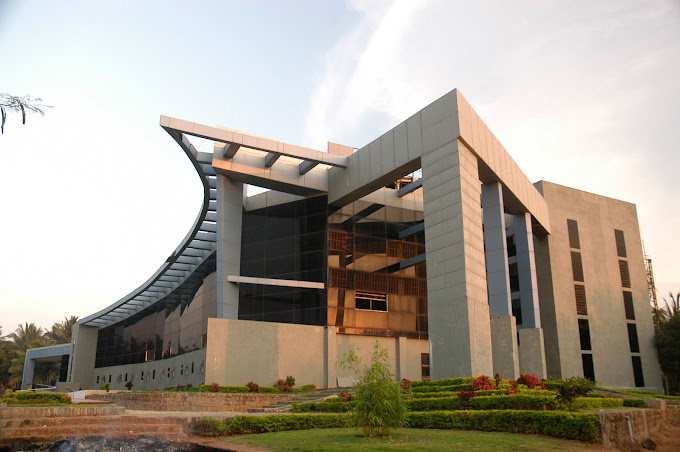

About KCE
KCE was established with the vision of providing cutting edge technical education and to create proficient engineers.
The college is accredited by NAAC with ‘A+’ Grade, TCS, Wipro and NBA.
KCE strives to impart quality education and an excellent career start to all its students.
Established in 2000, Karpagam College of Engineering is a premier Institute located in Tamil Nadu.
Institute offers Degree courses including 13 UG and 5 PG courses.
These programs are offerred in Full Time mode. Karpagam College of Engineering is a premier institute for B.E. / B.Tech, MBA/PGDM, MCA, M.E./M.Tech courses.
Candidate can pursue in multiple range of courses like B.E. / B.Tech, MBA/PGDM, MCA, M.E./M.Tech with the stream of Engineering, Business & Management Studies, IT & Software.
Over the period, Karpagam College of Engineering has gained expertize through its trained and experienced faculty in the fields of Computer Science Engineering, Civil Engineering, Electrical Engineering, Electronics & Communication Engineering, Electronics Engineering, Information Technology, Mechanical Engineering, Artificial Intelligence & Machine Learning, Automobile Engineering, Communications Engineering, Mechatronics Engineering, VLSI Design.
Courses offered by institute are recognized by approving bodies like AICTE.
Courses Offered:
- B.E. Computer Science and Engineering
- B.E. Civil Engineering
- B.E. Computer Science and Engineering (CyberSecurity)
- B.E. Computer Science and Technology
- B.E. Electronics and Communication Engineering
- B.E. Electrical and Electronics Engineering
- B.E. Electronics and Telecommunications Engineering
- B.E. Mechanical Engineering
- B. E. Computer Science and Design
- B.Tech. Information Technology
- B. Tech. Artificial Intelligence and Data Sciences